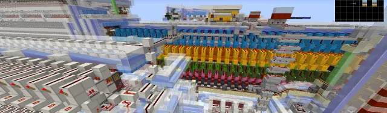
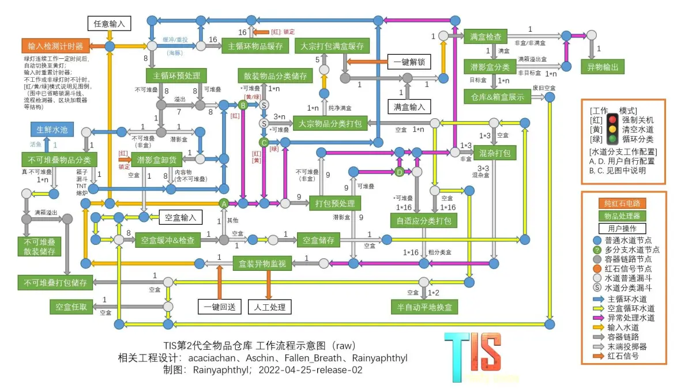
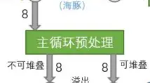
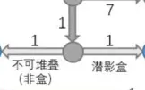
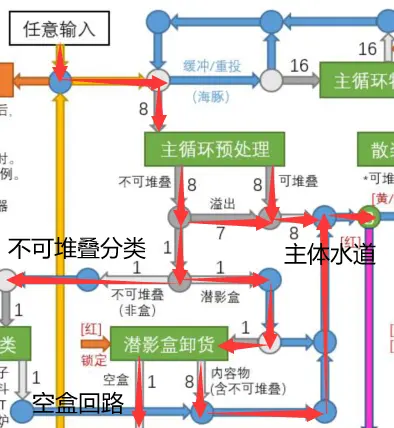
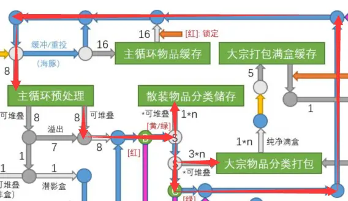
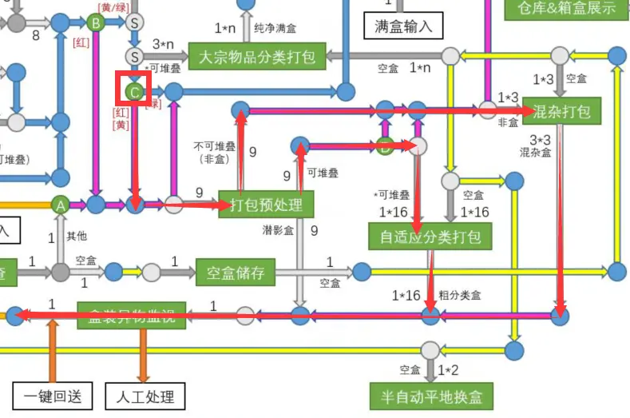
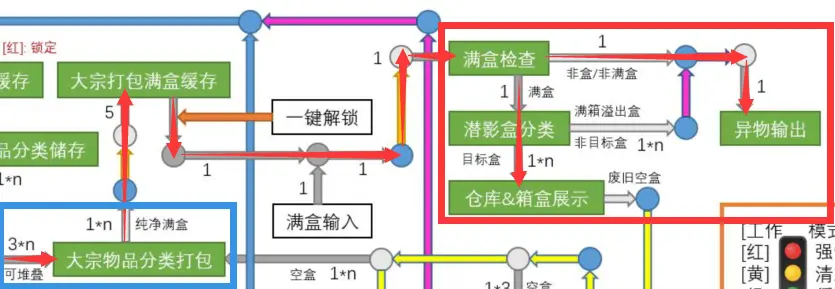
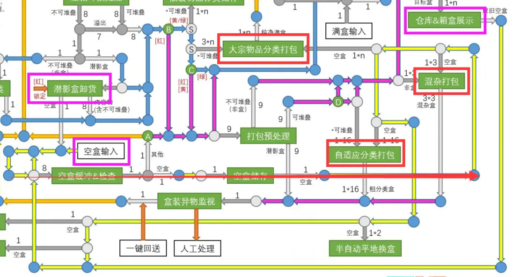

写在前面（感谢）
在今日，@雨奈_RNY 发布了 tis全物品的第一版流程图。虽然目前该流程图作为第一版可能尚且有不完善的地方或者说明不完全的地方，但其复杂的流程已经能让我们窥见这庞大系统的一斑，也可以稍微分析一下其相对于“第一代传统全物品”的优越性和可以改进的不足之处

而其优秀的思路，也未尝不可以在be一试
本文是与 @Maple_枫溪 共同讨论出来的，也感谢tis的大佬 @redberd小红 为我们解答了一些当时不理解的地方
目录
2、从tis的全物品聊大宗的发展
2.0、je全物品的思路
2.1、如何看懂这张流程图
2.1.1、输入
2.1.2、循环水道
2.1.3、异常处理
2.1.4、大宗
2.1.5、空盒回路
2.2、“二代”传统全物品进步在了哪里
2.2.1、大宗的处理速度
2.2.2、大宗的架构
2.3、该设计不足的地方
2.3.1、大宗的处理速度
2.3.2、不可堆叠的流向处理
2.3.3、基于改进的不可堆叠的大宗
2.4、be如何设计新的大宗
2.4.1、基于多物品的高速大宗
2.4.2、基于自适应的小型“编码”大宗
2.0、je全物品的设计思路
je由于有区块加载器，常规的je思路为快速分类完物品后完成卸载，可以不用在意静态卡顿
因为je的漏斗不存在漏斗bug，所以可以使用更高的物品输入，可以更好地压榨漏斗缓存
--------------------
2.1、如何看懂这张流程图
首先节点只需要在意标注A、B、C、D的分支水道，其余节点均可视为常规节点
箭头上的数字为这条通路的可通过倍速或者这台机器的输入输出倍速，附带的小字是物品种类
如这台主循环预处理，可以以八倍速输入，可以输出八倍速的不可堆叠物品或者八倍速的可堆叠物品，说明这台预处理主要功能为八倍速不可堆叠分离

这个节点可以以单倍速输入进不可堆叠物品，以单倍速输出盒子或者其他不可堆叠物品，说明这个节点是盒子分离

绿灯连续工作一定时间后自动切换至黄灯（即黄灯代表循环水道卸货）（黄灯仅与B、C节点相关）
输入时重置计时器
不工作或非绿灯时不计时
图中省略与物品处理无关的其他支持类设备
2.1.1、输入
物品经由黄色路线进入主循环预处理进行不可堆叠分离，可堆叠物品直接输入进主体水道，不可堆叠物品输入进单倍速的盒子分离，非盒子送向不可堆叠分类另行储存，盒子送到拆包机，拆包后盒子送到盒子回路，内容物一并送到主体水道
输入向主体水道有可堆叠物品，不可堆叠物品的溢出，拆包后的混杂物品。所以有可能会掺入一定量的不可堆叠物品

2.1.2、循环水道
循环水道是在经过主循环预处理后经灰色线路进入的，主体为蓝色线路
循环水道经过了“散装物品分类储存”（即全物品单片）和“大宗物品分类打包”（即大宗）
可以看到，上面说的两者都只接受可堆叠物品。其中全物品单片可以接受1*n（n即物品种类）倍速，而大宗可以接受3*n（同上）倍速
由于输入端未能将不可堆叠完全分离，所以还需要再次经过主循环预处理进行多次的筛除。同时高倍速的不可堆叠分离也起到了物品重投的作用

2.1.3、异常处理
当物品在水道内循环了一定时间后，C口将物品导流向紫色路线。这是为了将多次循环后仍无法分类的物品导出集中存储，避免长时间循环占用全物品资源且增加全物品卡顿
物品经过打包预处理进行不可堆叠分离，可堆叠物品通过自适应进行分类打包，不可堆叠物品进行混杂打包。打包好的物品被输入进缓存，由玩家判断有无再分类价值。如命名物品一般无分类价值，可以由玩家干预，人为取出另作他用
如果有分类价值，可以通过开关再次输入进全物品入口

2.1.4、大宗
大宗在流程图上被拆解为了“打包”和“仓储”两大部分，即图中蓝色框出来和红色框出来的两部分
物品进入打包阵列。这个阵列可能是三倍速打包机或者自适应组成的高速打包阵列，可以接近或者近似于3*n的处理速度
打包好的盒子内容物纯净且满盒，送往缓存仓库
玩家可以将满盒资源或其他物品放在缓存仓库，并统一将缓存仓库的物品自动送往大宗仓库
在大宗仓库，非满盒物资、非盒子、非大宗收录的满盒物资会被送到异物仓库统一收集，剩下的大宗收录的满盒物资会被大宗仓库整理收集

2.1.5、空盒回路
空盒由主控的物品处理里的拆包机、大宗回收的空盒和一个固定的玩家补盒点提供
通过红色箭头标注出的总线提供给红色框出的两台打包机阵列和一台自适应阵列
可以无浪费地回收全物品产生的空盒并立即使用，也避免了玩家需要去每一台打包机手动补盒的麻烦

--------------------
2.2、“二代”传统全物品进步在了哪里
2.2.1、大宗的处理速度
非常令人惊喜的是，这台全物品的大宗不再是传统大宗的单倍速或二倍速打包机处理大量同种物品
更高倍速的使用可以大幅降低大宗收录物品在水道内的循环时间。而通常占据了全物品长时间循环的正是传统大宗收录的物品和十六色混凝土
大宗架构糅合的部分编码全物品架构，让大宗的收集打包速度完成了突破，更好地提高了全物品处理物品的速度，切合了je的全物品突破方向
2.2.2、大宗的架构
大宗采用了类似编码全物品的盒子处理架构，让玩家可以更轻松地在盒子进入仓库之前进行介入，如送入整盒资源只需要在一个相对固定的位置，可以对打包物品进行提前整理和取用
空盒检索、盒子分类也可以避免玩家物资放错位置、非法物资进入大宗等问题的发生
物品在大宗内不用再跑更长的路导致更长时间的循环，不需要更零散的物品在长水道内跑动，而只需要用盒子在之间运输即可，降低了大量掉落物造成的卡顿和卡顿时间
--------------------
2.3、该设计不足的地方
2.3.1、打包机与大宗的拆分
打包机和仓储拆开并成为独立系统，让打包机无法再和对应的大宗单片一一对应，需要通过检索盒子才能归位
如果打包机可以和大宗完成绑定，那么可以去除冗余的空盒检索、潜影盒分类，加快物资进入大宗的速度
我们假设采用了三宽的三倍速打包机与大宗进行对应，那么可以将打包机纵向堆叠成三宽模块，与三片大宗相对应，这样便于大宗与打包机的匹配
2.3.2、不可堆叠的流向处理
在物品进入主循环水道时，不可堆叠分离的溢出物品被简单地送到了主循环水道，同时拆包产生的可能的不可堆叠物品也未经处理送到了主循环水道。不可堆叠物品无法被大宗和全物品单片处理，只能在主循环水道内无谓地循环，增加掉落物数量，增加卡顿，占用不可堆叠分离的效率
在be，这些问题已有一套成熟的处理方案
直接将不可堆叠物品送到缓存内等待潜影盒分离完成。毕竟不可堆叠物品在箱子内造成的卡顿远低于在水道内循环产生的卡顿
而拆包产生的物品将会送到物品输入的位置，和玩家输入的物品一并经过不可堆叠物品分离，有效地分离出不可堆叠物品，同时有效地限制了物品流速
依然看到有je的玩家对于物品先经过不可堆叠的必要性没有足够认知，这里再重述一下早在3.2.2提过的看法
1、不可堆叠物品进入水道无法被吸取，只会在水道中徒然循环，持续而坚定地产生实体的卡顿
2、不可堆叠物品会和可堆叠物品一块占用重投，妨碍重投的工作。若像本文讨论的设计，采用输入端的不可堆叠分离重投，则会与输入端的物品共同抢不可堆叠分离
3、不可堆叠分离工作时间仅几秒，与长达至少三分钟的分类循环比起来耗时极短，完全没有跳过不可堆叠分离直接进行的循环的需要
4、增加“先经过不可堆叠分离”和“跳过不可堆叠分离”两个模式会增加水道的复杂性。而如上的优势足以证明先经过不可堆叠分离存在优势，两个模式的选择反而更像智商税
5、不可堆叠分离结构简单，占地极小，即使是堆叠8+7=15片占地也并不大
2.3.3、基于改进的不可堆叠处理的大宗
当水道内不存在不可堆叠物品时，以二倍速漏斗做的打包机、自适应便不再容易损坏。这时候大宗可以不再依赖于三倍速，去尝试采用六倍速分类打包或者自适应自行去调节分类速度
大宗以单倍速回收水道内一盒物品需要十二分钟，显然对于大宗要面对的“大量物品”非常力不从心。这些物品会在水道内多次的循环，让全物品长时间无法关机
而更高的倍速则是解决这个问题的良药。更高的倍速可以让掉落物快速被大宗完成处理，降低占用水道的时间和在水道内的卡顿
显然，在大宗物品的倍速比常规分类的倍速足以比拟大宗的物品量之前，这个追赶仍然没有达到尽头
如果你所设想的就不存在大量大宗物品输入进全物品的话，那么三倍速的必要性也并不大，可以考虑沿用单倍速的大宗打包。但你可以限制自己不去向全物品投整盒物品，无法限制其他人不去投整盒物品
--------------------
2.4、be如何设计新的大宗
在be的漏斗bug仍然没有修复之前，be仍然很难效仿je去使用更高的分类倍速来完成接近3*n级别的物品流直接输入进全物品的主循环水道。但为了接近这个效率，仍然有一些方案可以尝试
以下两个方案均为我与 @Maple_枫溪 共同讨论出来的，以预分类全物品为蓝本的优化方案。或许这两种方案是近在眼前的优化方案
2.4.1、基于多物品的高速大宗
在预分类之前通过多组多物品和临时分类单元将可堆叠物品进行快速过筛，筛选出最多54种大量物品选为大宗收录物品。这些大宗收录物品走一条独立的小型循环水道，与其它可堆叠物品的水道独立
将三宽的六倍速打包机纵向堆叠三个，与三片大宗单片一一对应。以这样的设计为一组，可以堆叠多组。这样的话打包好的盒子无须再经过空盒检测和潜影盒分类，同时能以六倍速这样的较高的速度进行分类，让一盒物品理论上只需要不到两分钟就可以处理完毕
这种设计只需要较为简单的潜影盒科技树，避免了自适应的合并，以及像tis设计的空盒检测和潜影盒分类。较为成熟的设计不易损坏，方便检修
2.4.2、基于自适应的小型“编码”大宗
在拥有较高倍速的潜影盒合并的情况下，多片自适应动态调整速度可以获得较高的物品输入倍速，过筛物品速度也可以快于多物品过筛。且传输打包好的物品造成的卡顿远低于大量散装物品在水道内循环产生的卡顿
但自适应很容易产生不满的盒子，你依然需要潜影盒检索、合并、分类才能输入到对应的大宗箱子内。且不是收录项的盒子还需要完成拆包处理，重新送回对应的水道。相对来说较为麻烦
写在最后（作者的碎碎念）
_(:з」∠)_